Below are some brand identities & logos that I have created.
Logo design for Ryan Sobol Consulting.
Logo design concept for WebSol Media Group.
Logo design concept for ZenWing Consultants.
Logo design concept for Pinnacle Solutions.
Logo design for Audio Amateir, Inc. www.audioamateurinc.com
Logo design for audiobytz, a bi-weekly e-newsletter.
Below is a variety of printed material that I have produced.
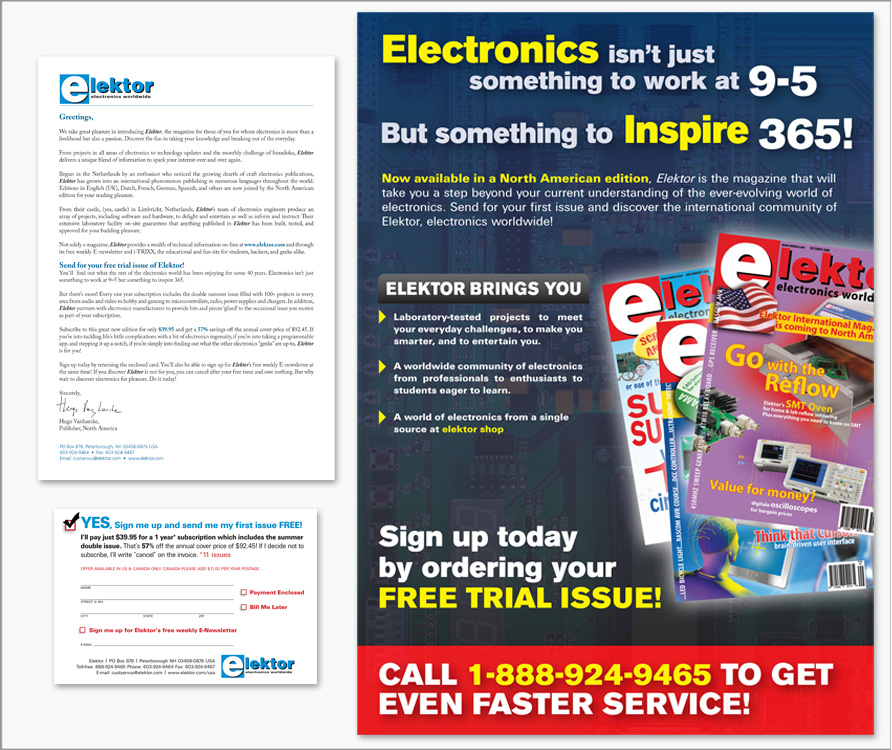Elektor Magazine. A promotional media packet was designed which included a flyer, letter, and reply card.
Postcard Mailers. A high-quality, large-format postcard was designed and sent to hundreds of businesses around the world to promote a free listing in a sourcebook for the loudspeaker industry.
Postcard Mailer. A high-quality, large-format postcard was designed and sent to hundreds of businesses around the world to promote a free listing in a sourcebook for the tube audio industry.
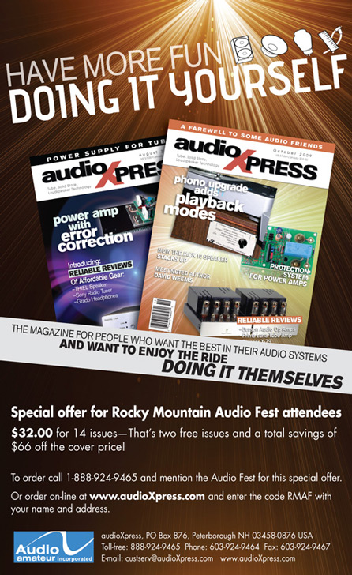In-house Advertisements. A sample of two in-house promotions.
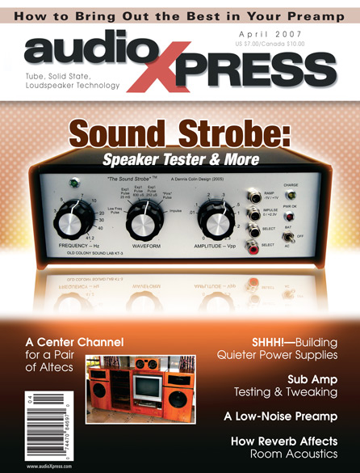Magazine Designs. Samples of a monthly consumer based magazine. Involved with the graphic and print direction of each issue from start to finish.
Click here for a digital sample.
Click here for a digital sample.
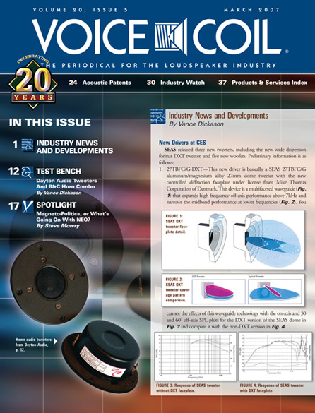Periodical Designs. Sample of a monthly periodical for the loudspeaker industry. Involved with the graphic and print direction of each issue from start to finish.
Click here for a digital sample.
Click here for a digital sample.
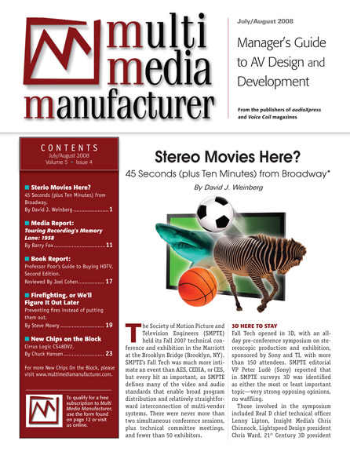
 Sourcebook Designs. Sample of an annual sourcebook for the loudspeaker industry. Involved with the graphic and print direction of each issue from start to finish.
Sourcebook Designs. Sample of an annual sourcebook for the loudspeaker industry. Involved with the graphic and print direction of each issue from start to finish. Click here for a digital sample.
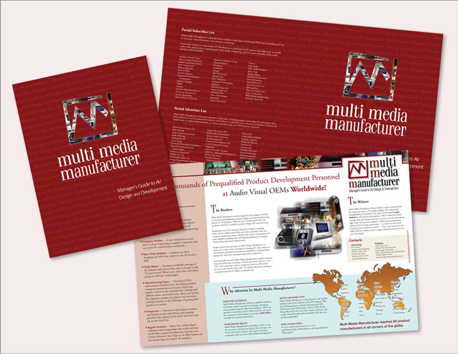Multi Media Manufacturer Media Packet. A media packet was designed to help promote a periodical for the audio/visual industry.
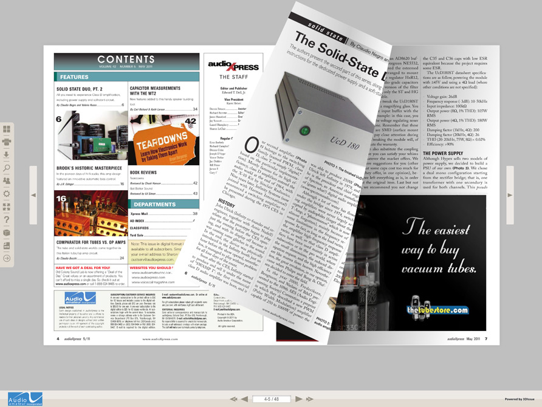Digital Publication Design. Design and implemntation of a digital format as an alternative to printed material. Click here for a sample.
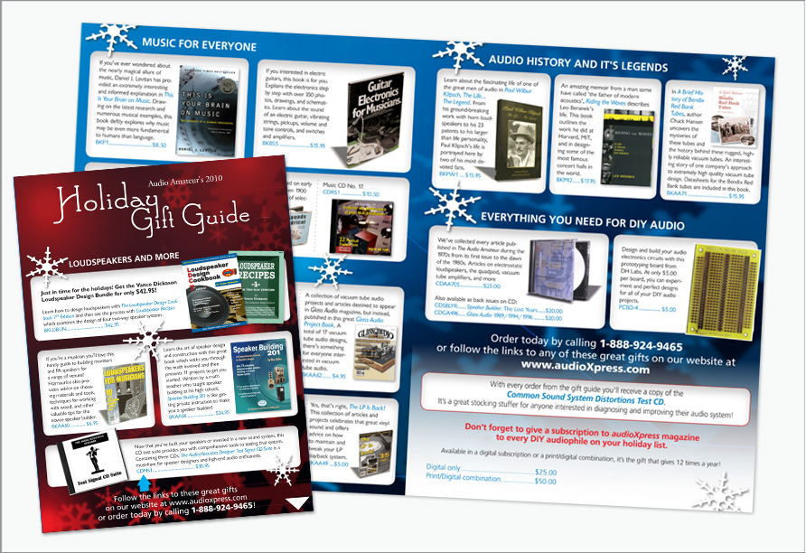Digital Catalog Design. Design and implemntation of a digital format as an alternative to printed material. Click here for a sample.
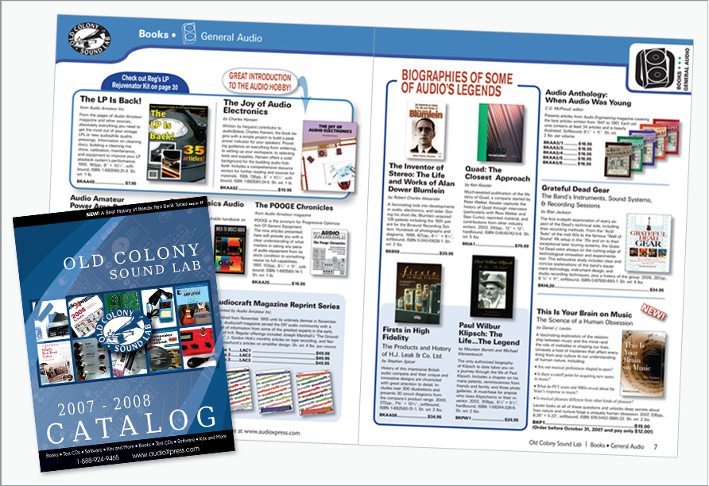Catalog Design. Design and print production of a product catalog.
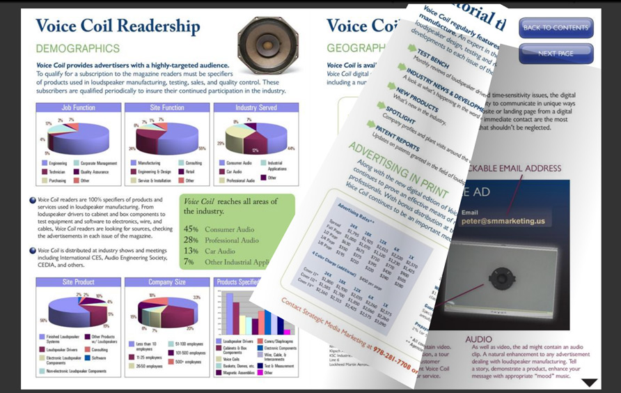Digital Media Packet Design. Design and implemntation of a digital format as an alternative to printed material. Click here for a sample.
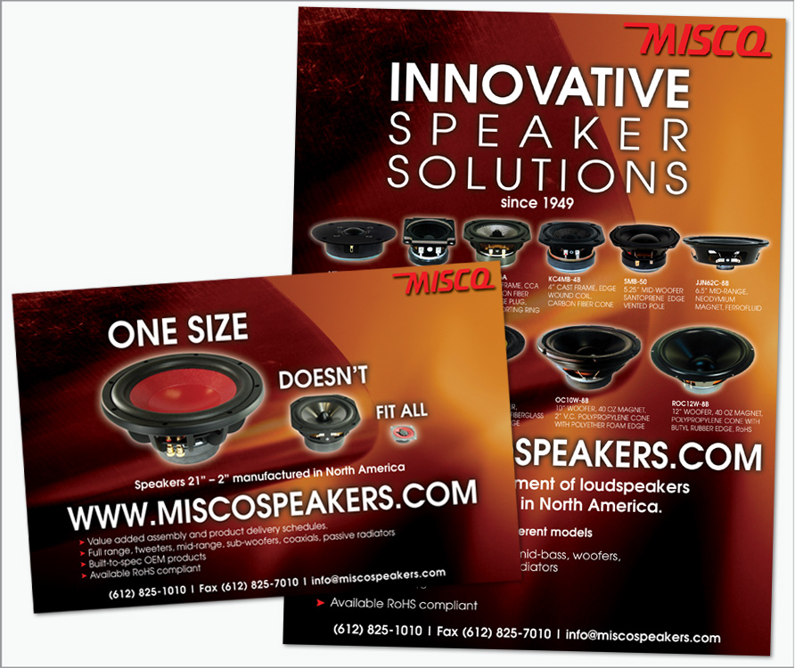Ad design. An ad design for Misco Speakers. This ad ran in dozens of magazines and reached thousands of readers.

Below is some work that I have created for myself or friends.
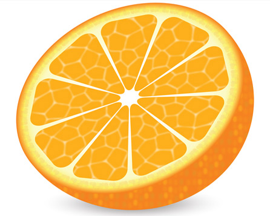